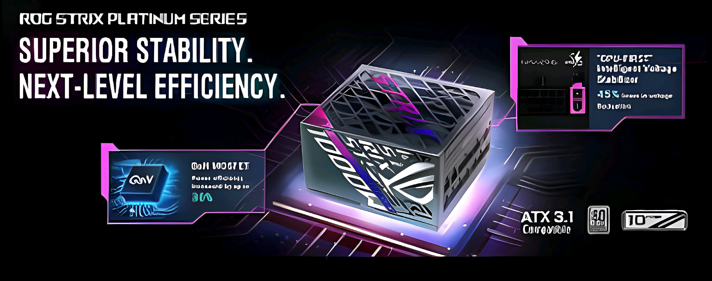
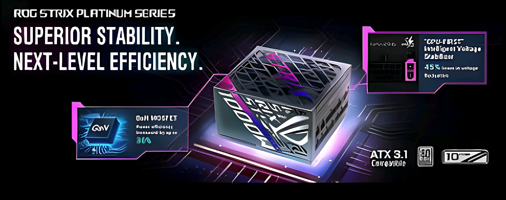
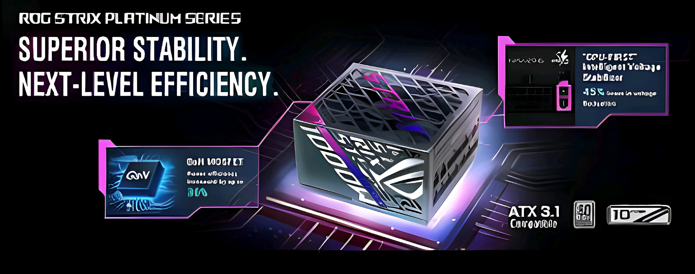
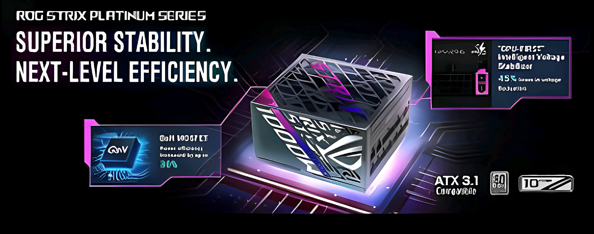

Smartphones
Computadoras Portatiles


Dispositivos portatiles para juegos


Accesorios

Los mejores routers gaming de 2024 de ROG y ASUS
Los mejores monitores gaming OLED de ROG: encuentra el OLED perfecto para tu estación de batalla

Fuentes de alimentación de la serie ROG Thor III: energía eficiente que se mantiene fría bajo presión

Guía de la placa base ROG Z890: conoce a los nuevos contendientes para tu próxima plataforma de juegos

Instale hasta siete SSD M.2 en una placa base con la nueva tecnología ROG M.2 PowerBoost

“La única manera de ganar la próxima guerra mundial es prevenirla”. Después de la gran guerra, bajo el liderazgo de las Naciones Unidas Gaianas (GUN), la raza humana esperaba restaurar una Edad de Oro una vez más. Sin embargo, sus recursos eran limitados y nunca podían distribuirse de manera justa. Mientras el ideal de un “Nuevo Orden” brillaba en los carteles publicitarios, el mundo real siguió desmoronándose lentamente. Al final, la utopía de la que tanto hablaban las autoridades se convirtió en nada más que una promesa vacía. El descontento y la decepción de la gente común necesitaba una salida. Durante un tiempo, los CySports organizados por el gobierno apaciguaron al público, pero no pudieron compensar la falsa esperanza en la realidad. Antes de que la furia de la multitud se dirigiera hacia quienes tenían autoridad, el frenesí se redirigió hacia quienes tenían poderes extraordinarios, los GAMER, que cargaban con el pecado original de la gran guerra.
Hace mucho tiempo, apareció un grupo especial de personas con dones únicos que les permitían resonar con el elemento silicio. Estas habilidades especiales han atraído celos y persecución de la sociedad en lugar de bendiciones. Los GAMERs han ocultado sus dones a lo largo de la historia. En secreto, usan los “Ojos Intrépidos” como tótem para hacer avanzar la civilización humana en estos tiempos digitales. En una guerra comercial mundial, los GAMERs fueron expuestos a los ojos humanos por accidente. La gente comenzó a envidiarlos, pero pronto comenzaron a aterrorizarlos. Se supone que los GAMERs deben promover y desarrollar la civilización; en realidad, han sido mantenidos cautivos por las autoridades, luchando en un caos sin sentido y desapareciendo lentamente.
Un GAMER que soñaba con la igualdad de derechos para sus hermanos fue víctima de un experimento secreto e inhumano llevado a cabo por un sindicato. Su familia fue aniquilada en una conspiración similar. Un sueño roto y el odio hacia los seres humanos lo convirtieron en un ángel caído llamado FATE. Juró erradicar a la raza humana de la Tierra como venganza. Adondequiera que iban sus ejércitos, la desesperación y el dolor los seguían. Cuando la Guerra FATE llevó a la raza humana al borde de la extinción, se reveló que una sociedad secreta de GAMERs, Cavalon, se oponía a la invasión de FATE. Trabajando con GUN, esta asociación secreta planeó una incursión contra las fuerzas de FATE, iniciando un conflicto frontal. Cuando se resolvió la crisis, la nueva era mundial se denominó Calendarium Gaian.
Una destrucción arrasadora es inminente. La población de GAMERs está bajo amenaza. Retirarse conducirá a un final que es incluso peor que la muerte. Siete héroes se destacan como una égida contra ese futuro. AKIRA es un rōnin experimentado en batalla, SE7EN es un asesino conocido por su agilidad y fría belleza, HORSEM4N es el Segador que anhela la salvación, GO es un gigante blindado, AchT es un hacker que pasa entre las dimensiones física y digital, OMNI es una IA construida con tecnología negra, y PKD es un lobo solitario que puede controlar micro-bots con su psicoquinesis. Reunidos en la encrucijada del destino, los campeones están listos para reavivar sus almas. Su credo: Romperemos todas las reglas y despertaremos nuestros espíritus heroicos con valentía. Seremos libres de ataduras y renaceremos en el fuego de nuestra fe. Construiremos el arca para conquistar nuestro destino con hierro y sangre, navegando sin miedo hacia la tierra de la liberación y la promesa. REPÚBLICA DE GAMERS